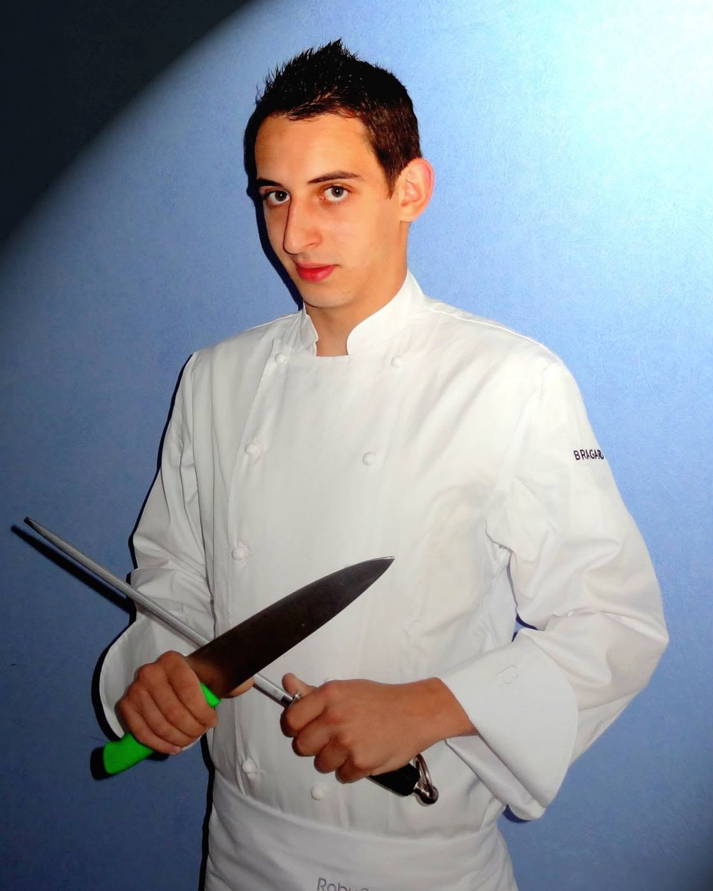
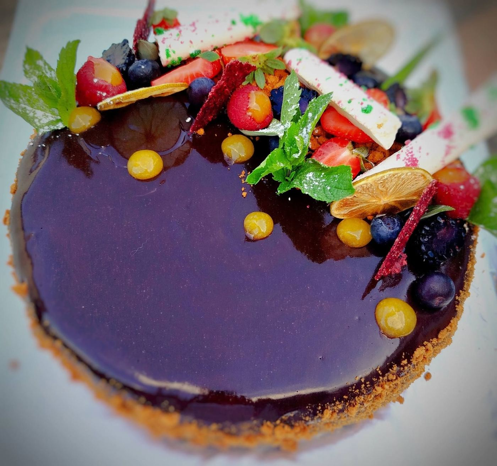
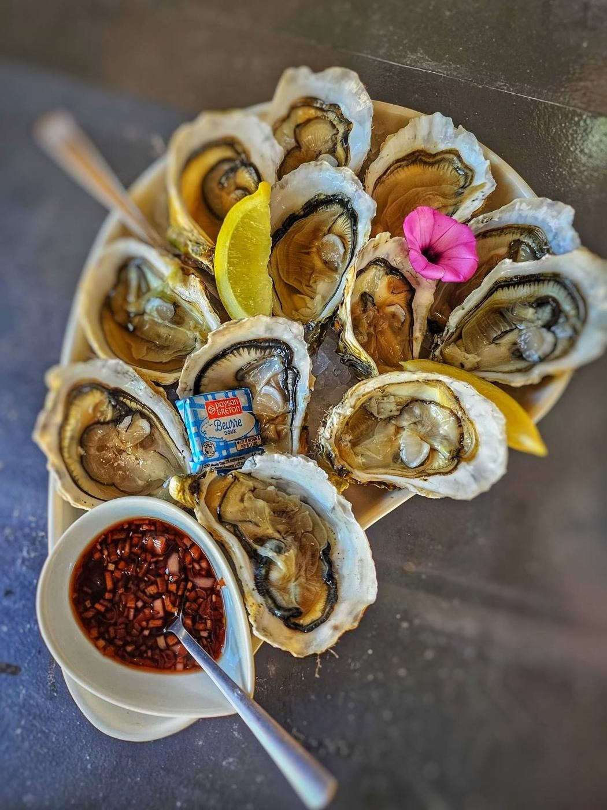
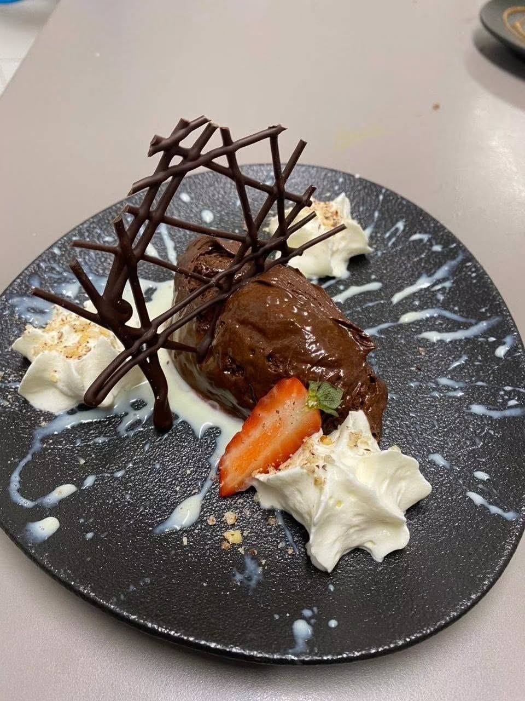
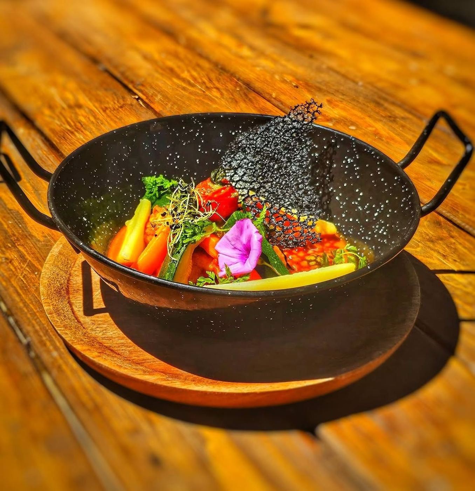
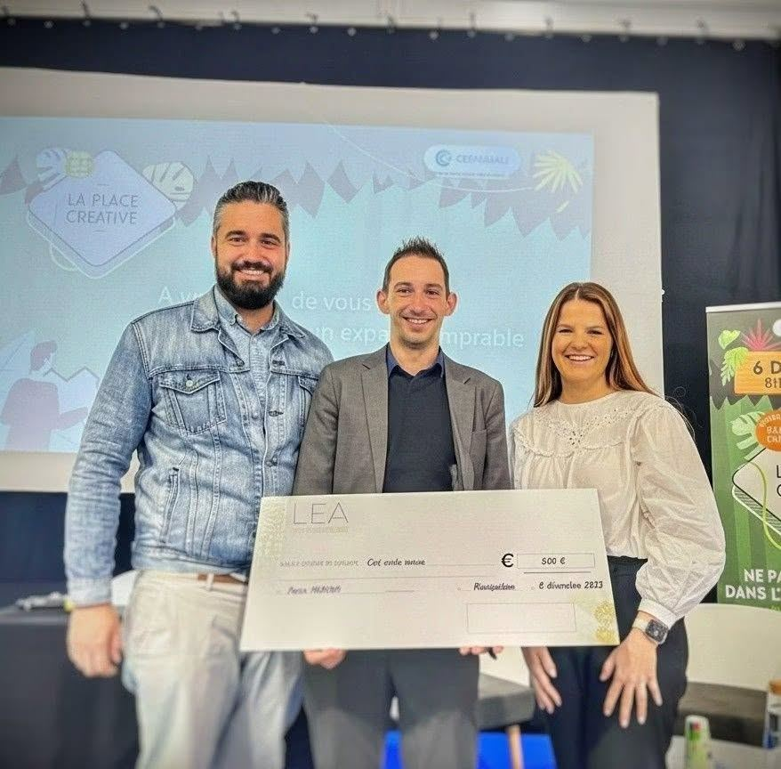

Kévin Marion
Chef de cuisine, de Lourdes à Leucate

Amuse-bouche
Une cuisine faite maison, au rythme des saisons

Kévin a appris le métier au Lycée des métiers de l'Arrouza, à Lourdes, et s'est fait remarquer en concours dès sa formation.
Second de cuisine à La Mangeoire, au Mercure Sensoria de Saint-Lary-Soulan, il y pratique une cuisine semi-gastronomique entièrement faite maison. Il rejoint ensuite le littoral audois et catalan, où il dirige des cuisines de saison jusqu'à 200 couverts.
Dans l'assiette : les produits de la mer, les légumes de saison, les fleurs comestibles, et une vraie pâtisserie de restaurant.
Entrée
Les distinctions
- 2023
Lauréat du prix CREACC
21e édition, Montpellier, pour le projet Monts & Mers.
- 2015
Médaille de bronze, Meilleur Apprenti de France
Épreuve du 13 mai 2015.
- 2014
3e place, concours des Disciples d'Escoffier
28 novembre 2014.
Plat
Le parcours
Chef de cuisine, Fish&Blues
La Franqui, Leucate — cuisine de la mer
Saison 2025
Chef de cuisine, Dix Vins Plage
Port-Leucate
Saison 2024
Pâtisserie, Le Kakou
Le Barcarès — desserts de restaurant
2023
Projet Monts & Mers
Restaurant éco-responsable, lauréat CREACC
2023
Second de cuisine, La Mangeoire
Mercure Sensoria, Saint-Lary-Soulan — semi-gastronomique, tout fait maison
2017
Chef de cuisine, L'Athena
Port-Leucate — 150 à 200 couverts en pleine saison
Saison 2017
Lycée des métiers de l'Arrouza
Lourdes, Hautes-Pyrénées — formation aux métiers de la cuisine
Dessert
Ses assiettes
Dressées et photographiées en service par Kévin.

Tarte au chocolat
fruits rouges, menthe, agrumes

Légumes de saison
fleurs comestibles

Huîtres
citron, condiment

Chocolat
résille de chocolat, fraise, meringue

Poêlon de légumes
tuile noire

Fruits rouges
crumble, meringue
Mignardises
Un projet à lui
Monts & Mers
Un restaurant éco-responsable à Leucate, avec des produits locaux, engagés et uniquement de saison. Le nom résume son parcours, des Pyrénées à la Méditerranée.
Le projet a reçu le prix CREACC le 6 décembre 2023 à Montpellier.

Café
Une brigade à monter, une saison à préparer ?
Kévin est basé à Leucate.
kevin.marion6@gmail.comSon travail au quotidien sur Facebook